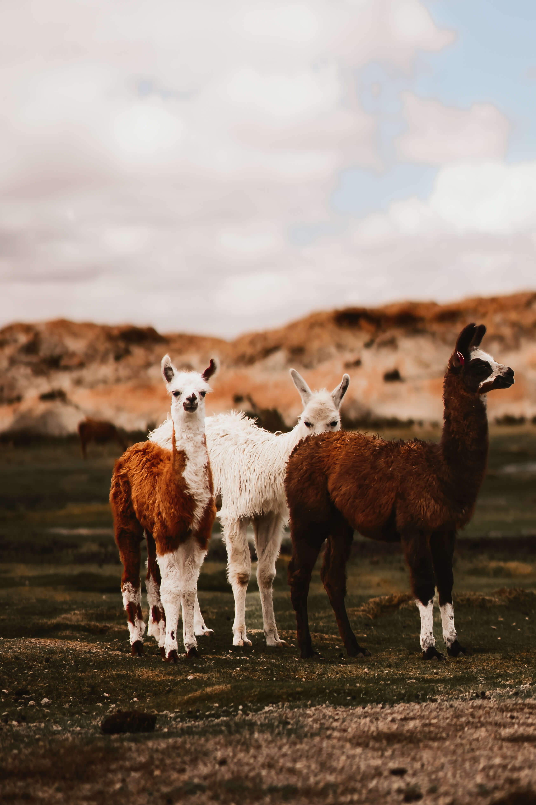
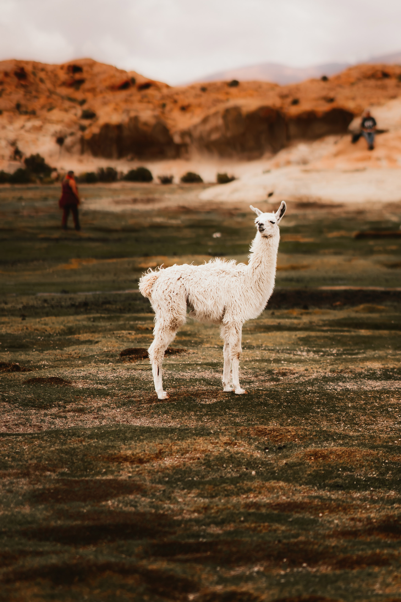
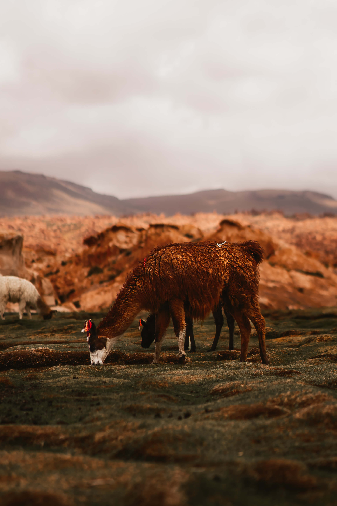

About Wildlife in Uyuni
In the surrounding highlands and deserts, you'll find vicuñas and llamas, both relatives of the alpaca, roaming freely across the rugged landscape. These herbivores are well adapted to the dry, cold climate of the Altiplano. Smaller mammals, such as the viscacha—a rodent that resembles a rabbit—can often be spotted among rocky outcrops.
  